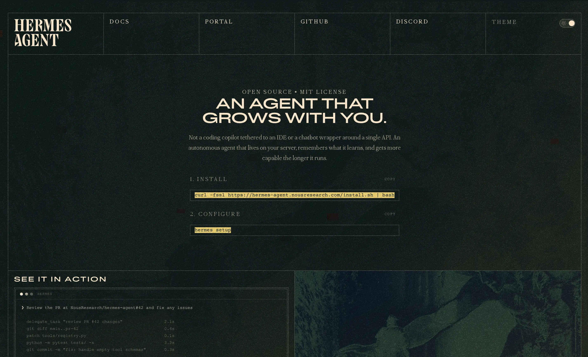
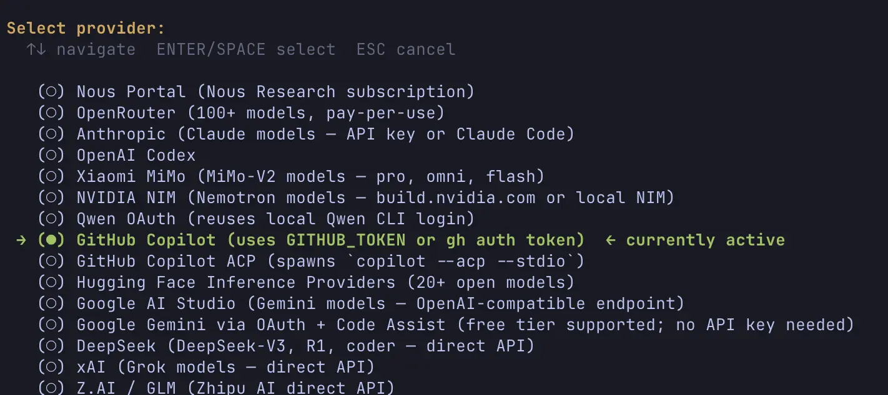
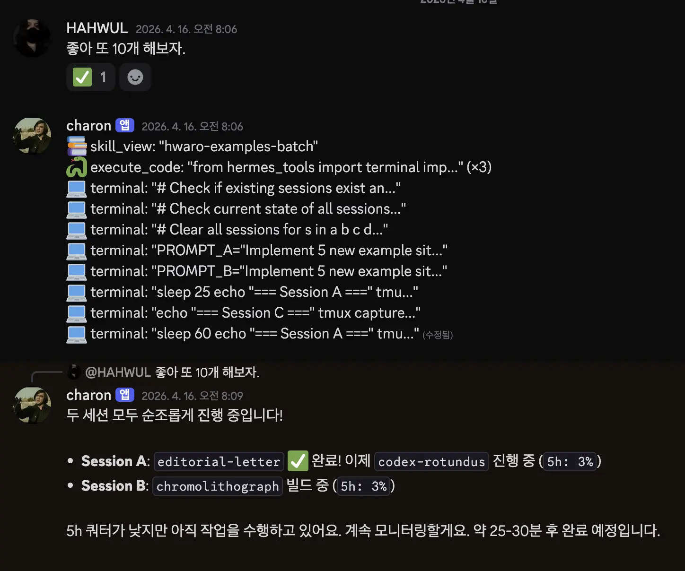
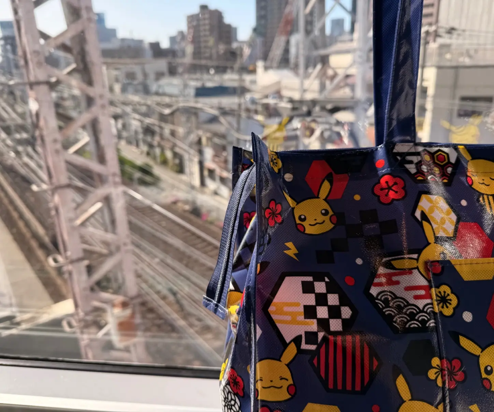
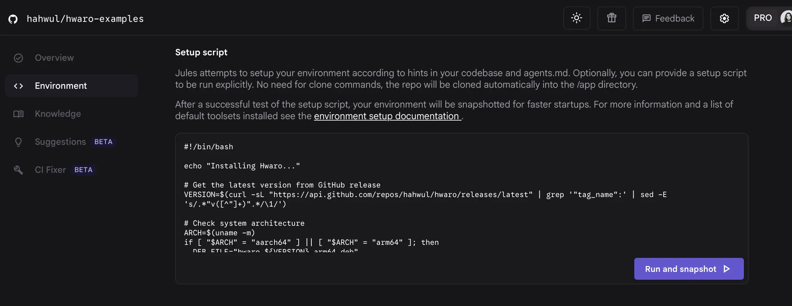

Traveling with Hermes in Japan
My Remote Setup and Project Workflow While Traveling
I spent the past week traveling in Japan. It's a country I visit every year, so it's familiar territory, but this year I prepared a little experiment. I set up the Hermes Agent on the Mac Studio at home, and kept directing it through Discord to work on projects while I was away. The results turned out better than I expected, and I wanted to share that experience.
In my AI workflows I sometimes hand the orchestrator role to the AI, but for important projects I prefer to stay hands-on. This time, driving Hermes remotely let me make good use of travel and downtime. Of course, I brought my MacBook too, so I still did some work directly late at night or early in the morning.
Hermes Agent
Hermes is an open-source AI Agent from Nous Research, and it's been getting attention as an alternative to OpenClaw. Its core feature is self-improvement. After the Agent finishes a task, it reviews the result itself, remembers patterns, or turns them into new skills it can reuse. The more you use it, the smarter it gets.
I've personally been a fan of the self-learning concept, so I'd been testing it locally since March. This time I finally put it to work on an actual open-source project.

Setup
Hermes supports a variety of providers, so you can configure it however you like. Since I use Claude, Codex, and Gemini subscriptions heavily, I hooked up GitHub Copilot, which had more room to spare, for lighter tasks. (I'd been struggling to burn through Copilot's monthly quota anyway, so it was a perfect fit.)
Since provider handling is a lightweight task, I mostly used the Sonnet 4.6 model. If you want to save even more on cost, Grok Code Fast would also be a solid choice.

For the messaging gateway, I went with Discord. You create a Discord bot and register its token with Hermes.
Personally, I think the messaging channel is critical from a security perspective. Discord lets you control bot permissions in fine detail, and Hermes' settings let you restrict access to specific user IDs via ALLOWED_USERS. With this setup, the bot only carries the permissions it actually needs, and random users can't just invoke it at will.
If you look at ~/.hermes/.env, it's defined like this:
DISCORD_BOT_TOKEN=********
DISCORD_ALLOWED_USERS=********
DISCORD_HOME_CHANNEL=********
Workflow
Coding requires precision, so Hermes (Copilot) alone isn't quite enough in terms of quality. So most of the real work got delegated to Claude Code, Codex, and Gemini. Early on I had to give multiple directions, but once the conversation built up some context, Hermes started routing to the appropriate model (Claude, Codex, Gemini) on its own depending on the situation, which was pretty appealing. Copilot was mostly used for the chat channel and light tasks.
Block macOS sleep
Leaving the Mac Studio idle for long periods puts it to sleep automatically, so I needed to prevent that. I handled it with a small app I've been developing myself called NoDecaf, which was nice because it doubled as a real-world test.
In Japan
Before leaving, I finished plenty of testing and dropped the main work instructions into Discord, then went off to enjoy the trip. Feedback requests and permission approval notifications came in occasionally, but nothing overwhelming. I could check and handle them pretty casually.


Once the conversation had built up some history, I could keep my instructions brief and Hermes would still handle things well, which was satisfying. Watching it notice a usage limit and queue up a pending task on its own honestly moved me a little :D
Generated Skill
I could see the skills Hermes had automatically generated from its workflow. The hwaro-examples-batch skill visible in the image above is a good example. It studied the patterns of tasks I frequently assign around hahwul/hwaro-examples and turned them into a skill on its own.
Skills are stored under ~/.hermes/skills, with built-in skills and user-generated ones managed together. hwaro-examples-batch lived at ~/.hermes/skills/github/hwaro-examples-batch, and looking at its SKILL.md, it documented the trigger phrases I usually use, the local clone path (interestingly, even though I told it a specific path was fine to use, it set up a separate one, probably to avoid conflicts with the user's own workspace), and the scripts needed to carry out the task.

Since skills are built from actual performed work, it's starting to feel like generating them automatically from the AGENT's workflow might be a better choice than writing SKILLs by hand. I'll have to keep running Hermes and squeeze out more skills.
Jules
Separately from Hermes, Jules was actually still running automatically during the trip too. I keep Jules on lighter tasks, and because it's purely cloud-based, I can run it comfortably from home or on the road. A few scheduled jobs are set up on the hwaro-example side, periodically identifying pages with problems, fixing them, and sending PRs. The PRs it opens then get handled by Hermes using Codex.

If you set up the working environment within Jules' Environment, there will be little difference from running it on an actual local PC.
Areas for Improvement
Convenience comes with security risks. One thing I felt going through this flow is that permission separation matters. In particular, for high-privilege accounts like GitHub, I think it's worth creating a separate dedicated account just for the Agent.
Conclusion
Since I usually do most of my work sitting right at my Mac, my biggest question was whether I could actually use AI effectively from just my phone while traveling. It turned out to be more comfortable than I expected, and the setup seems to save a lot of time during transit, so once vacation is over I might try applying this flow to my commute as well. Serious work is still better when I'm hands-on (easier for me, easier for the AI, better results), but anything that can be verified through skills (e.g., development with tight test coverage, tasks that don't need broad permissions) seems better handled through Hermes in the gaps.
Being able to fully enjoy my own time while small tasks keep ticking along is really appealing. Raising an Agent with self-improvement like Hermes also feels like a pretty meaningful experience. If it sounds interesting, I'd recommend giving it a try.